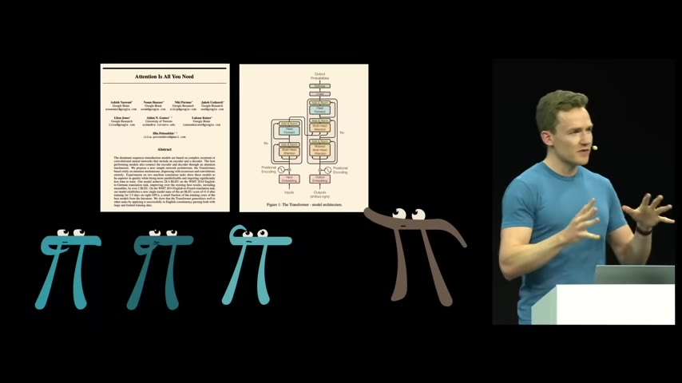
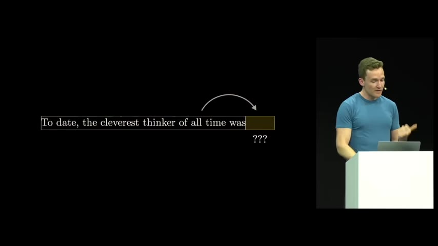
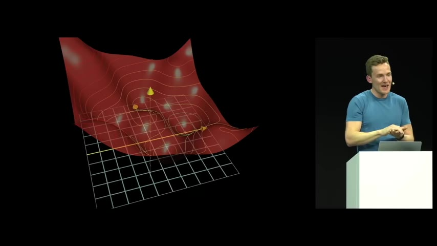
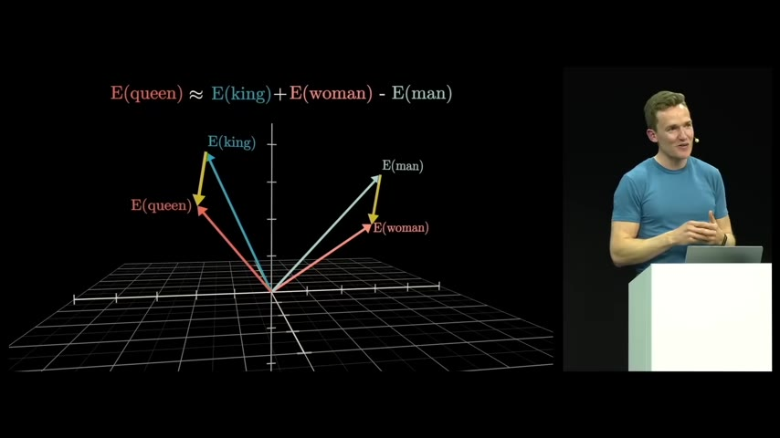
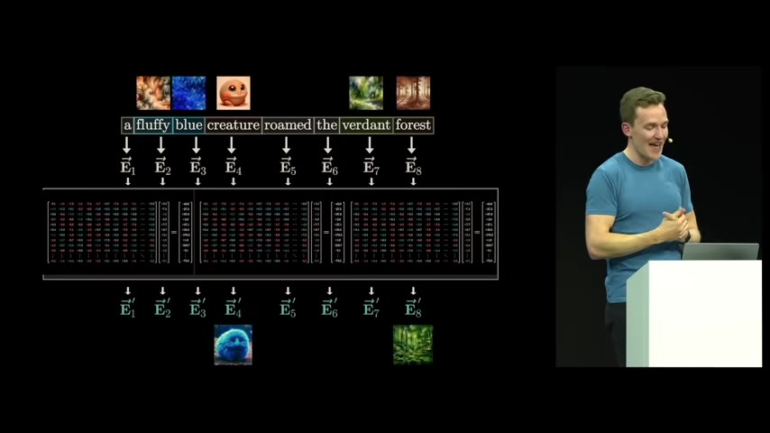
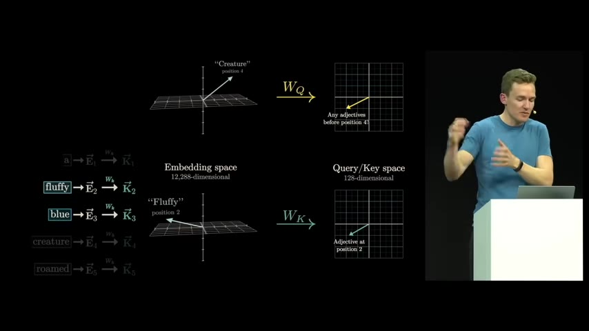
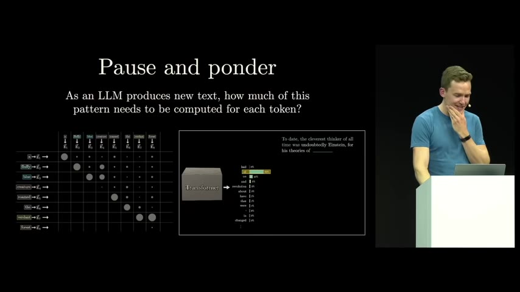
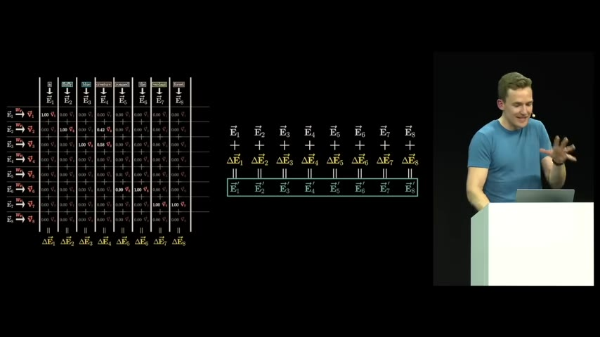
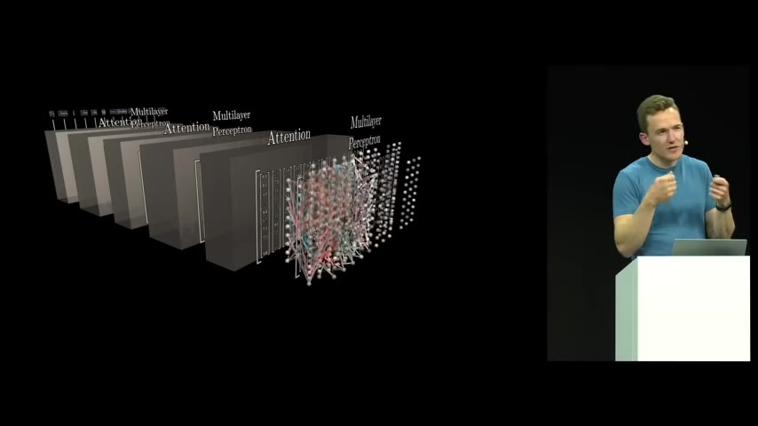

Grant Sanderson (3Blue1Brown) walks through the actual computations in Transformer models — from token embeddings to attention patterns to multi-layer architectures — showing why the math is so conducive to GPU parallelization.
Watch on YouTube
Transformers were introduced in the 2017 paper "Attention Is All You Need" for machine translation, but since then they've flourished across transcription, speech synthesis, image classification, and — most prominently — the models behind chatbots. The core model is simpler than the original: it's trained to take a piece of text and predict what comes next.
Feed in "To date, the cleverest thinker of all time was" and the model assigns a probability distribution over all possible next tokens. It doesn't just name one word — it spreads probability across plausible completions, including hedging words like "probably" or "undoubtedly." To generate text, you sample from that distribution, append the chosen token, and repeat. Running the extended sequence back through the model gives you the next prediction, and so on.
You can choose the most-likely word (temperature zero, which produces stilted output), or introduce randomness for something that sounds more natural.

The first step is tokenization — breaking text into subword units (not characters; that would make the context far too large, and the quadratic attention scaling would bloat the network). Each token is looked up in a fixed embedding table, mapping it to a high-dimensional vector that encodes its meaning plus its position. (Position is baked in because the architecture is fully parallel — there's no inherent order in how data is processed.)
Then the embeddings flow through a repeating pattern: attention block, multilayer perceptron, attention block, and so on. The attention block lets the vectors "talk" to each other so a word can update its meaning based on context — the ambiguous word "mole" means something different in "American mole," "one mole of CO₂," and "biopsy of the mole."
The multilayer perceptron is where most of the parameters actually live — about two-thirds despite the paper's title. Research from DeepMind interpretability researchers found that stored facts (like "Michael Jordan plays basketball") seem to reside in these perceptron layers. Attention handles context; the MLP handles world knowledge.

Training is entirely separate from the network's design. You give the model random text snippets from the internet and the word that actually followed, then measure cross-entropy loss: the negative log of the probability the model assigned to the correct next word. If the model guessed right, the cost is near zero. If it guessed wrong, the cost spikes steeply.
Then gradient descent and backpropagation tweak hundreds of billions of parameters iteratively — little steps downhill on an unbelievably high-dimensional loss surface. The question of what the trained network is actually doing mechanistically is "a very, very unsolved one still today."
The actual question of what it's doing mechanistically is a very, very unsolved one still today.— Grant Sanderson

Words with similar meanings cluster near each other in embedding space. But more remarkably, directions in the space can encode abstract ideas. In the 2013 word2vec paper, the most memorable example:
E(queen) ≈ E(king) + E(woman) − E(man)
The vector from "man" to "woman," added to "king," lands close to "queen." Directions encode gender, geography, and other semantic axes. During training with gradient descent, the model "learned" to associate a specific direction with the notion of gender — adding a little vector can take you from a masculine embedding to a feminine one.
The space is even richer than it appears. In 12,288 dimensions, you can fit an exponentially growing number of nearly-orthogonal vectors — even with an 88°–92° buffer. This exponential growth in capacity kicks in at higher dimensions and explains why Transformer models scale surprisingly well.
If you can encapsulate every possible concept with a distinct direction in this space, 12,000 dimensions doesn't actually feel like all that much.— Grant Sanderson

The attention mechanism uses three matrices per token: query (what this token is looking for), key (what this token offers), and value (what gets passed along).
Each token's embedding is multiplied by the query matrix to produce a query vector — for a noun like "creature," it asks "are there any adjectives before me?" Every token gets multiplied by the same query matrix. Then each is multiplied by the key matrix to produce key vectors — adjectives respond by producing keys that align with the noun's query.
The dot product measures alignment: positive when vectors point in the same direction, zero when unrelated (perpendicular), negative when opposed. This produces a grid of dot products — an attention pattern — showing which words are relevant to which others.


During training, every token position predicts the next word for every prefix of the input. That means a single input sequence yields thousands of training examples. But during text generation, if the model looks ahead, it sees the answer it's supposed to predict.
The solution: before softmax, set all future-position dot products to negative infinity. After softmax those become zero, and the remaining columns automatically normalize. This produces a masked (or causal) attention pattern — the lower triangular portion is active, the future is hidden.
The pattern grows quadratically with context size. That's why scaling up context in a traditional Transformer is very non-trivial.— Grant Sanderson

A single attention head only learns one type of relationship (adjectives modifying nouns). Multi-head attention runs roughly a hundred such heads in parallel, each with distinct QKV matrices producing distinct attention patterns. Adverbs find verbs, nouns find antecedents, pronouns find their referents — all happening at once.
Each head produces a proposed update to every embedding. All those updates are summed together with the original embeddings. The result flows into a multilayer perceptron, then into another attention block, and so on for 96 layers (in GPT-3). With each iteration, the vectors gain richer and richer meanings — by the end, the last vector has absorbed everything it needs to predict the next token.

The complete architecture is a stack of layers, each consisting of an attention block followed by a multilayer perceptron. Between them are residual connections — the embeddings flow through unchanged in dimension but gain richer meaning at every step. The residual structure is "baked in from the beginning" and helps with training stability.
The loose thought is that vectors gain meaning as they flow through the network — the context they draw from becomes richer with each layer. By the final layer, the hope is that the last vector has absorbed everything needed to predict the next token with high probability.
The vectors are gaining richer and richer meanings, and the context that they're drawing from is itself becoming richer and richer and richer.— Grant Sanderson
:::